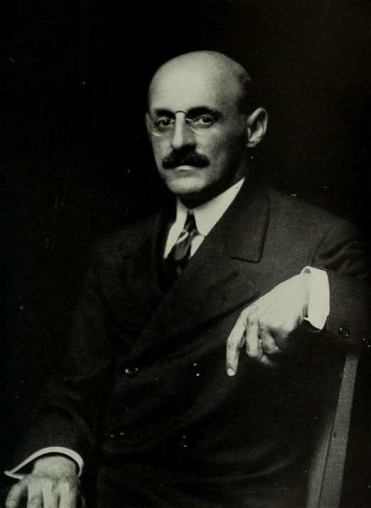
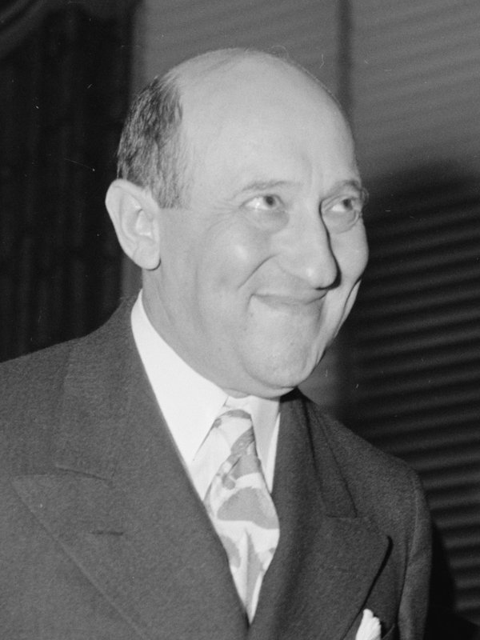
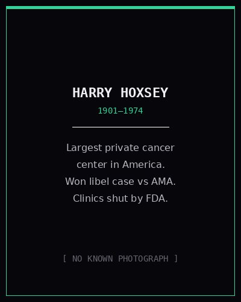
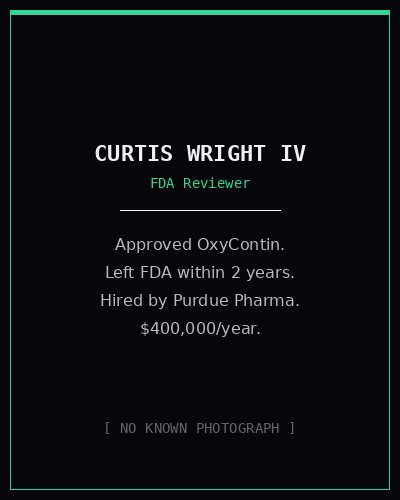

Body Wars
In 1910, a report commissioned by the Carnegie Foundation and enforced through over $91 million in Rockefeller General Education Board grants shut down more than half the medical schools in America. By 1967, the sugar industry had paid Harvard scientists to blame fat for heart disease. By 1996, a single painkiller would ignite an opioid epidemic that has claimed over 800,000 American lives while generating $35 billion for its maker. The war for your body was never a fair fight — because you didn’t know it was happening.
What You Think You Know
The United States spends more on healthcare than any nation on Earth.
The Numbers
Annual U.S. healthcare spending (2024):
$5,300,000,000,000
More than the GDP of Germany. More than the military budgets of every country on Earth combined. The most expensive healthcare system ever built.
And the people inside it carry the heaviest chronic-disease burden in the developed world.
The system is not failing — it is succeeding at something other than health.
If the system is designed to make us healthy… why are we so sick?
This scroll answers that question. Not with speculation. With receipts.
Congressional records. Court settlements. Litigation discovery. The industry’s own internal memos. The federal government’s own reports.
The war for your body is the most documented war in this series.
The Architecture

Most people know John D. Rockefeller as the oil monopolist. Standard Oil. The richest man in history. What they don’t know is what he did after the breakup.
He didn’t lose power. He redirected it.
The Flexner Report (1910)
The Enforcer: Morris Fishbein

Morris Fishbein edited the Journal of the American Medical Association (JAMA) for 25 years (1924–1949). He never practiced clinical medicine after his internship, yet he ran the AMA’s Bureau of Investigation, targeting practitioners who stepped outside the medical establishment. He carried tobacco advertisements in JAMA for two decades and later accepted personal payments from tobacco maker Lorillard in the 1950s to defend smoking. He was the most powerful figure in American medicine, and he used that power as a gatekeeper.
The Casualties
Four practitioners and one suppressed Senate staff memo. Each shows how aggressively the medical establishment — and later the U.S. Food and Drug Administration (FDA) — policed institutional boundaries, even where the scientific merits of the targeted therapies remained contested or unproven.

The Institution
This was the architecture. A private medical association teamed with Carnegie prestige and Rockefeller capital to reshape an entire profession. Competing schools were eliminated. Dissident practitioners were fought through courts and regulatory injunctions. The institution itself took tobacco money for decades. And the pharmaceutical model — the model left standing — grew directly alongside the petrochemical complex.
Standard Oil’s cartel agreement with IG Farben — the German chemical conglomerate that held a 42.2% ownership stake in Degesch, maker of Zyklon B, and operated Auschwitz III-Monowitz with slave labor — is documented in the Kilgore Committee hearings and the Nuremberg trial records. IG Farben’s successor companies — Bayer, BASF, and Hoechst (now Sanofi) — became pillars of the modern pharmaceutical and agrochemical industries.
The Poison
The architecture built the walls. Now: what they put inside them.
Two parallel tracks — food and pharma — running through the same revolving door.
The Sugar Fix
The Pyramid Scheme
Luise Light, the U.S. Department of Agriculture’s (USDA) Director of Dietary Guidance, designed the original food pyramid. Her version recommended 3–4 servings of whole grains. The USDA’s political leadership overrode her, tripling it to 6–11 servings of bread, cereal, rice, and pasta — without specifying “whole” grain. The meat and dairy recommendations were also increased. Light later said: “I vehemently protested that the changes, if followed, could lead to an epidemic of obesity and diabetes — and I was right.”
The same USDA that sets your dietary guidelines is legally mandated to promote American agriculture. The agency telling you what to eat is the agency selling what farms produce.
D. Mark Hegsted — the Harvard scientist paid by the Sugar Research Foundation — helped draft the 1977 Senate Select Committee (McGovern) Dietary Goals while still at Harvard, and was then appointed Administrator of the USDA Human Nutrition Center in 1978, helping shape the 1980 Dietary Guidelines for Americans that enshrined the low-fat orthodoxy his industry funders had paid him to promote.
The Monsanto Papers
Herbicide-tolerant genetically engineered varieties accounted for roughly 94% of U.S. soybeans and 89% of U.S. corn by the mid-2020s (USDA Economic Research Service). Seed costs have risen 325%. Glyphosate use increased 16-fold. Bayer acquired Monsanto for $63 billion — then lost billions more in court, setting aside roughly $16 billion in litigation provisions.
Bayer retired the Monsanto name immediately. The brand was too toxic. Glyphosate-based herbicides remained on store shelves at the time of this writing (April 2026).
On June 25, 2026, the U.S. Supreme Court ruled 7–2 in Monsanto Co. v. Durnell (No. 24-1068, opinion by Justice Brett Kavanaugh) that the Federal Insecticide, Fungicide, and Rodenticide Act (FIFRA) expressly preempts state-law failure-to-warn claims requiring cancer labels not mandated by the EPA — undercutting thousands of pending state Roundup lawsuits. Alongside the ruling, a Missouri state court granted final approval to Bayer’s $7.25 billion nationwide class-action settlement to cap remaining and future non-Hodgkin’s lymphoma claims over a 21-year period.
The Fluoride Question
On May 21, 2026, the U.S. Court of Appeals for the Ninth Circuit (Food & Water Watch, Inc. v. EPA, No. 25-384) vacated Judge Edward Chen’s September 2024 judgment on procedural grounds — holding that the district court abused its discretion under the party-presentation principle by holding the 2020 trial open for years to incorporate the August 2024 NTP monograph — and remanded the case to be decided on the original trial record. The appellate panel did not rule on fluoride’s safety. Meanwhile, state legislatures moved independently: Utah and Florida enacted the first statewide bans on adding fluoride to public drinking water in 2025, while HHS Secretary Robert F. Kennedy Jr. directed the CDC to revise federal fluoridation guidance and the EPA initiated a formal toxicity review.
The Revolving Door
Crisco was introduced in 1911 by Procter & Gamble — converting industrial cottonseed oil into “food.” Trans fats from hydrogenated oils would cause an estimated 30,000–100,000 premature cardiac deaths per year at peak consumption. The FDA didn’t ban them until 2018 — 107 years later.
Ultra-processed food (UPF) accounted for roughly 55% of American calories in CDC NHANES 2021–2023 data (~57% in earlier adult estimates). A 2024 umbrella review in The BMJ (British Medical Journal) found “convincing evidence” that higher UPF consumption is associated with 50% higher cardiovascular death risk, 12% higher type 2 diabetes risk, and 48–53% higher risk of anxiety and common mental disorders, alongside “highly suggestive evidence” of a 22% higher risk of depression.
The global ultra-processed food market is worth $3 trillion.
The Kill Shot
Everything documented so far — the captured schools, the bought science, the revolving door — created the conditions. This act shows the body count.
FDA reviewer Curtis Wright IV → Purdue Pharma ($400K/yr) → “less than 1% addiction” → an opioid epidemic claiming over 800,000 lives.
The marketing blitz: 1,000 sales reps. 34,000 branded promotional items — fishing hats, plush toys, music CDs. 5,000 physicians flown to resort conferences. Free starter coupons for patients. OxyContin sales rose from $48 million (1996) to $1.1 billion (2000). More than a 2,000% increase — a 22-fold surge.
The Body Count
Over 806,000 American opioid overdose deaths from 1999 through 2023 across three successive waves — prescription opioids ignited by OxyContin, followed by heroin and illicit fentanyl. That total exceeds American combat deaths in World War I, World War II, Korea, and Vietnam combined.
The accountability: after the U.S. Supreme Court struck down Purdue’s earlier $6 billion immunity deal in June 2024 (Harrington v. Purdue Pharma L.P.), a revised $7.4 billion settlement emerged from a family that withdrew roughly $10.7–$11 billion. No prison time for any Sackler. Spread across 806,000 opioid deaths, that is roughly $9,200 per death.
After the U.S. Supreme Court struck down Purdue Pharma’s earlier $6 billion bankruptcy plan in June 2024 (Harrington v. Purdue Pharma L.P., 603 U.S. 204, ruling that bankruptcy courts cannot grant nonconsensual immunity shields to non-debtors), a revised $7.4 billion reorganization plan — under which the Sackler family pays up to $7 billion over 15 years without blanket nonconsensual releases — was confirmed in November 2025 and took legal effect on May 1, 2026. Purdue Pharma was dissolved and barred from selling opioids, while initial victim and state abatement distributions began later in 2026. No member of the Sackler family served prison time. Separately, former McKinsey senior partner Martin Elling was sentenced in May 2025 to six months in federal prison for obstruction of justice following McKinsey’s December 2024 $650 million federal DOJ resolution.

These are not exceptions. They are the business model.
The system didn’t fail. It performed exactly as designed. The product was never health. The product was dependency.
The Web
Pull back. See the whole system at once.
Petroleum monopoly → philanthropic leverage → laboratory-clinical paradigm → petrochemical agriculture → captured nutrition science.
The Money
The pharmaceutical industry spends more on lobbying than any other industry in the United States. They fund the FDA. They fund the clinical trials. They fund the doctors and teaching hospitals. They fund the TV ads. They fund the medical education. And the largest fraud settlements in American history — $3 billion, $2.3 billion, $2.2 billion — are treated as the cost of doing business. No major pharmaceutical company has ever been excluded from federal healthcare programs, despite repeat criminal convictions.
Chemical weapons conglomerate → war crimes tribunal → pharmaceutical giant → $63B acquisition → your grocery store.
Across the Scrolls
They didn’t just control your energy, your money, your mind, and your information. They controlled your body.
The Cracks
The wall held for a century. By April 2026, visible cracks had opened.
The Receipts Go Public
The System Responds
At the time of this writing (April 2026), FDA additive reviews were underway: Red Dye No. 3 had been banned (January 2025), brominated vegetable oil revoked (July 2024), and the 1958 Generally Recognized as Safe (GRAS) self-affirmation loophole placed under federal scrutiny 68 years after its creation, alongside federal overhauls of school lunches and dietary guidelines. Multiple states had introduced legislation on food additives, fluoride, and pharmaceutical transparency.
At the time of this writing (April 2026), whether those reforms would survive the lobbying apparatus documented in this scroll remained an open question. Even so, the conversation had shifted: institutional critiques once dismissed as “fringe” had entered federal courtrooms, congressional hearings, and mainstream medical journals.
Throughout 2025–2026, HHS under Secretary Robert F. Kennedy Jr., the FDA, and the USDA moved forward on several food-system pillars flagged above: pushing manufacturers toward a late-2026/2027 phase-out of remaining petroleum-based synthetic food dyes (following the January 2025 Red Dye No. 3 ban), advancing formal proposed rulemaking to close the self-affirmed GRAS additive loophole, and releasing the 2025–2030 Dietary Guidelines for Americans emphasizing whole foods while explicitly targeting added sugars and ultra-processed foods. At the same time, CDC final data for 2024 showed U.S. life expectancy rebounding to a record 79.0 years (helped by a 26.2% single-year drop in drug overdose deaths), even as total U.S. healthcare spending climbed to $5.3 trillion (18.0% of GDP) and federal courts simultaneously shielded Bayer from state-level Roundup warnings (Monsanto Co. v. Durnell, June 2026) and vacated the 2024 federal fluoride order (May 2026) — confirming that the regulatory wall cracks unevenly, and never without counter-pressure.
The Architecture — One Last Look
The war for your body was fought with bought science, captured regulators, destroyed careers, and over 800,000 opioid graves. Every weapon is documented. Every name is on the record. Every dollar is traceable.
The question was never whether the evidence existed. The question was whether anyone would look at it.
You just did.
Disclosure is not a single event. It’s a process. And it only works if people are paying attention.